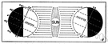

sunstroke
Also found in: Thesaurus, Medical, Financial, Encyclopedia.
Related to sunstroke: heat exhaustion, heat stroke
sun·stroke
(sŭn′strōk′)n.
Heat stroke caused by exposure to the sun and characterized by a rise in temperature, convulsions, and coma. Also called insolation, siriasis.
American Heritage® Dictionary of the English Language, Fifth Edition. Copyright © 2016 by Houghton Mifflin Harcourt Publishing Company. Published by Houghton Mifflin Harcourt Publishing Company. All rights reserved.
sunstroke
(ˈsʌnˌstrəʊk)n
(Pathology) heatstroke caused by prolonged exposure to intensely hot sunlight
Collins English Dictionary – Complete and Unabridged, 12th Edition 2014 © HarperCollins Publishers 1991, 1994, 1998, 2000, 2003, 2006, 2007, 2009, 2011, 2014
sun•stroke
(ˈsʌnˌstroʊk)n.
a sometimes fatal condition caused by overexposure to the sun's rays, marked by prostration with or without fever, convulsion, and coma.
[1850–55]
sun′struck`, adj.
Random House Kernerman Webster's College Dictionary, © 2010 K Dictionaries Ltd. Copyright 2005, 1997, 1991 by Random House, Inc. All rights reserved.
ThesaurusAntonymsRelated WordsSynonymsLegend:
Switch to new thesaurus
| Noun | 1. | sunstroke - sudden prostration due to exposure to the sun or excessive heat |
Based on WordNet 3.0, Farlex clipart collection. © 2003-2012 Princeton University, Farlex Inc.
TranslationsSelect a language:
Spanish / Español
sunstroke
[ˈsʌnstrəʊk] N → insolación fto get or catch sunstroke → coger or agarrar una insolación
to have sunstroke → tener una insolación
Collins Spanish Dictionary - Complete and Unabridged 8th Edition 2005 © William Collins Sons & Co. Ltd. 1971, 1988 © HarperCollins Publishers 1992, 1993, 1996, 1997, 2000, 2003, 2005
sun
(san) noun1. the round body in the sky that gives light and heat to the earth. The Sun is nearly 150 million kilometres away from the Earth.sol
2. any of the fixed stars. Do other suns have planets revolving round them?sol
3. light and heat from the sun; sunshine. We sat in the sun; In Britain they don't get enough sun; The sun has faded the curtains.sol
verb – past tense, past participle sunned – to expose (oneself) to the sun's rays. He's sunning himself in the garden.tomar el sol, exponerse a los rayos del sol
ˈsunless adjective without sun, or lacking sunlight. a sunless room. sin sol
ˈsunny adjective1. filled with sunshine. sunny weather.soleado
2. cheerful and happy. The child has a sunny nature.alegre
ˈsunniness nounˈsunbathe verb to lie or sit in the sun, especially wearing few clothes, in order to get a suntan. tomar el sol
ˈsunbeam noun a ray of the sun. rayo de sol
ˈsunburn noun the brown or red colour of the skin caused by exposure to the sun's rays. quemadura de sol; bronceado
ˈsunburned, ˈsunburnt adjectivesunburnt faces.quemado por el sol; tostado, bronceado
ˈsundial noun a device, usually in a garden, for telling time from the shadow of a rod or plate on its surface cast by the sun. reloj de sol
ˈsundown noun (especially American) sunset. puesta de sol
ˈsunflower noun a type of large yellow flower with petals like rays of the sun, from whose seeds we get oil. girasol
ˈsunglasses noun plural glasses of dark-coloured glass or plastic to protect the eyes in bright sunlight. gafas de sol
ˈsunlight noun the light of the sun. The cat was sitting in a patch of sunlight.luz del sol
ˈsunlit adjective lighted up by the sun. a sunlit room.soleado, iluminado por el sol
ˈsunrise noun the rising of the sun in the morning, or the time of this. salida del sol, alba, amanecer
ˈsunset noun the setting of the sun, or the time of this. the red glow of the sunset.puesta de sol, crepúsculo
ˈsunshade nounˈsunshine noun1. the light of the sun. The children were playing in the sunshine.luz del sol
2. cheerfulness or happiness. alegría, jovialidad
ˈsunstroke noun a serious illness caused by being in very hot sunshine for too long. insolación
ˈsuntan noun a brown colour of the skin caused by exposure to the sun. I'm trying to get a suntan.bronceado
catch the sun to become sunburnt. dar el sol a una persona, coger el sol a una persona, broncearse, ponerse moreno
under the sun in the whole world. I'm sure that he must have visited every country under the sun.bajo el sol, del mundo
Kernerman English Multilingual Dictionary © 2006-2013 K Dictionaries Ltd.
sunstroke
→ insolaciónMultilingual Translator © HarperCollins Publishers 2009
sun·stroke
, sun stroken. insolación.
English-Spanish Medical Dictionary © Farlex 2012
sunstroke
n insolación fEnglish-Spanish/Spanish-English Medical Dictionary Copyright © 2006 by The McGraw-Hill Companies, Inc. All rights reserved.